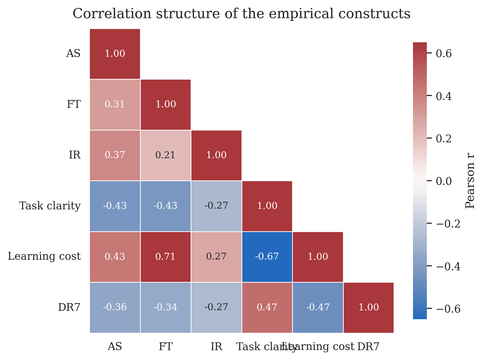
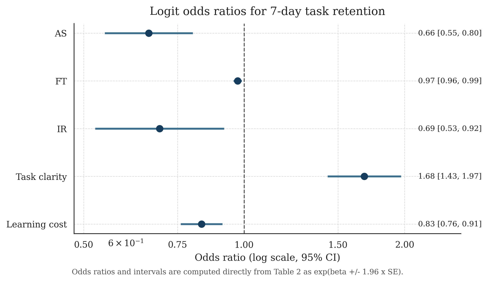
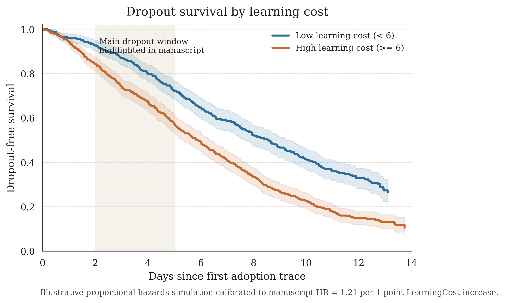
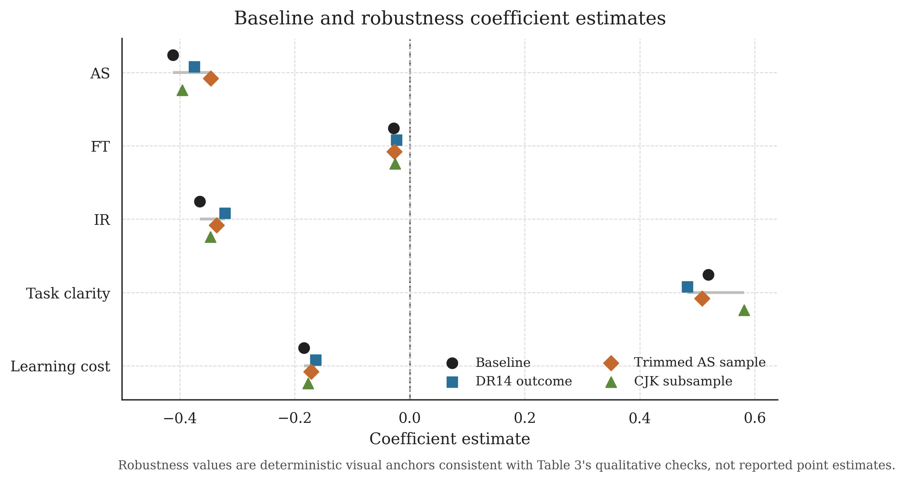

💩
从“技术狂欢”到“生产力停滞”：
东亚 AI 工具热潮中的表演性采纳与结构性失配（2025–2026）
东亚 AI 工具热潮中的表演性采纳与结构性失配（2025–2026）
ABSTRACT / 摘要
我们研究一个在东亚平台社会里几乎人人有感却很少被严肃建模的问题：为什么“AI 接入截图”越来越多，而稳定产出并没有同比增长。基于跨平台公开叙事样本（初始 N=1,204；清洗后 N=986），我们构建 AS（接入展示强度）—FT（摩擦暴露时长）—DR7（7日留存）—IR（身份残留率）框架。结果显示：AS 与 DR7 显著负相关（OR=0.662, p<0.001），TaskClarity 显著正相关（OR=1.681, p<0.001），LearningCost 显著提高弃用风险（HR=1.21, p<0.01）。本文主张：该现象更接近“激励结构失配”，而非“个人不努力”。
INDEX TERMS / 关键词
AI 扩散；表演性采纳；平台激励；学习成本；数字劳动；workflow 落地
IMPACT STATEMENT / 影响声明
本文把“你只是不会用 AI”的个人道德叙事，转写成可检验的机制问题：当平台奖励可见性而非可复用性时，用户理性选择会偏向“展示成功”，并系统性压缩“复盘投入”。
I. INTRODUCTION / 引言
在许多组织里，AI 工具的 adoption dashboard 一片繁荣：登录数上升、试用量暴涨、群里每天都有“我接上了”的截图。但项目周报里真正能复用的产出并不多，甚至出现“第二周即吃灰”的常态化轨迹。
我们将这一悖论称为 High Access, Low Retention, Weak Landing (HALRWL)。它不是个体意志力问题，也不是单纯模型能力问题，而是“展示激励—身份竞争—学习摩擦”耦合下的结构性结果。
直白说：当可见收益集中在“看起来会用”，而成本集中在“真的把流程跑通”，多数人会优化前者。
II. DATA & METHODS / 数据与方法
样本来源：东亚五地公开社媒/论坛/群聊的 AI 采纳叙事。清洗后 N=986。样本可能存在公开表达者过度代表，因此外推需谨慎。
变量直译：AS=前48小时“我接上了”式展示频度；FT=从准备上手到首次关键报错的小时数；DR7=第7天是否还在用同一工具做同一任务；IR=停用后是否仍持续维持“AI 在用”身份信号。
Pr(DR7=1)=logit^-1(α+β1AS+β2FT+β3IR+β4TaskClarity+β5LearningCost+γX)
稳健性：DR14 替换、极端 AS trimming、分地区子样本、Cox 风险模型。
| 变量 | Logit系数 | OR | p值 |
|---|---|---|---|
| AS | -0.412 | 0.662 | <0.001 |
| FT | -0.028 | 0.972 | 0.002 |
| IR | -0.365 | 0.694 | 0.010 |
| TaskClarity | 0.519 | 1.681 | <0.001 |
| LearningCost | -0.184 | 0.832 | <0.001 |
III. FIGURES / 图表

Figure 1. 变量相关热图：TaskClarity 与 DR7 同向，AS/LearningCost 与 DR7 反向。

Figure 2. OR 森林图：TaskClarity 为最强稳定正向预测因子。

Figure 3. 学习成本分组生存曲线（Illustrative，仅机制示意，不替代主估计）。

Figure 4. 主模型与稳健性场景系数方向一致。
IV. DISCUSSION / 讨论
该结果不支持“再喊几次 all-in AI 就能提效”的简单叙事。真正决定留存的，不是接入速度，而是任务定义精度与摩擦后的修复意愿。
因此，管理建议应从 KPI 端改起：把“接入率”降权，把“7–14 日复用质量”升权；把“截图分享”从核心激励位移到“复盘文档质量”。
V. CONCLUSION / 结论
AI 时代真正的分化，不是“谁先晒出接入截图”，而是“谁先把一次偶然成功，做成可重复流程”。